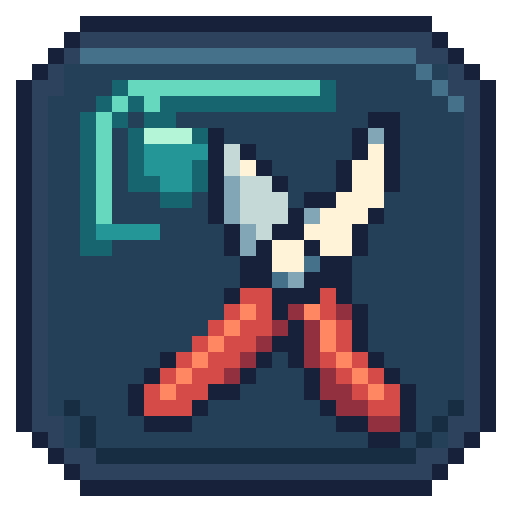

MSTokenBar
Turn your AI coding tokens into Gunpla, right in your macOS menu bar.

- Unbox: the tokens you spend in Claude Code, Codex, Gemini CLI and more open a Kit Box, and a mobile suit comes out.
- Grade up: keep coding and the suit climbs through the kit grades actually released for it, SD to PG.
- Hangar: completed suits are saved by series, suits you have not built yet show as silhouettes, commander and ace customs appear as rare variants, and each mode of the Unicorn Gundam is collected on its own.
- Build record: every build keeps when its box was opened, when each grade was reached and how many tokens each tool put in, shown on the suit's detail page.
Requires macOS 14 or later. The app is not notarized, so right-click it and choose Open on first launch.